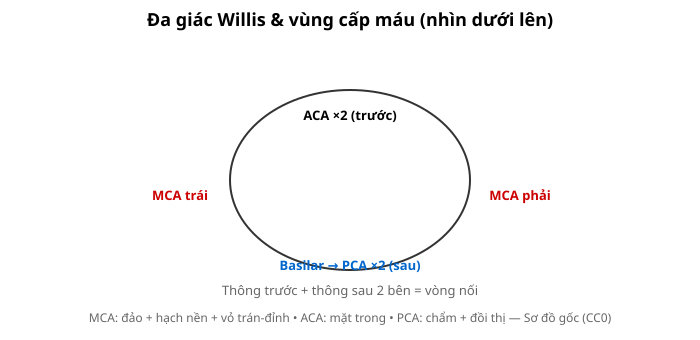
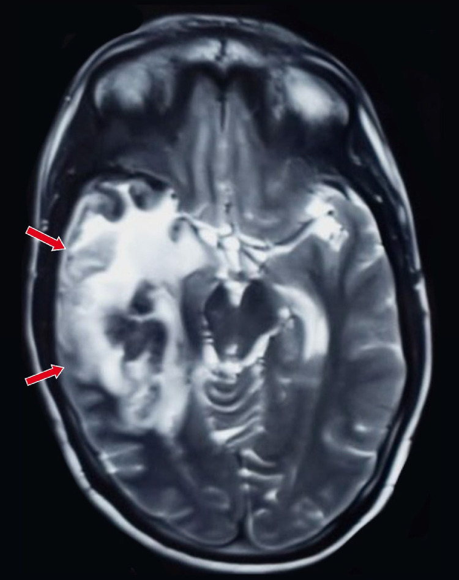
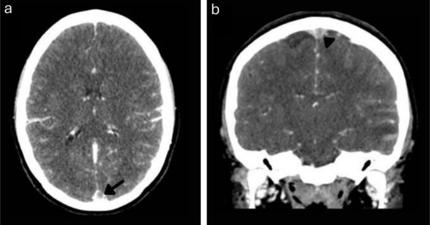
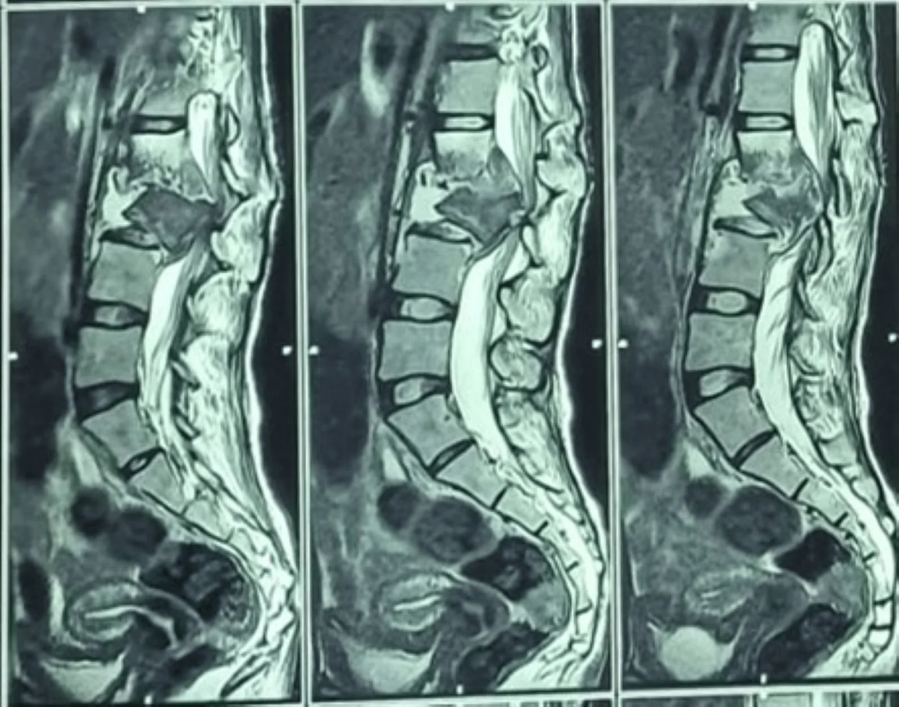
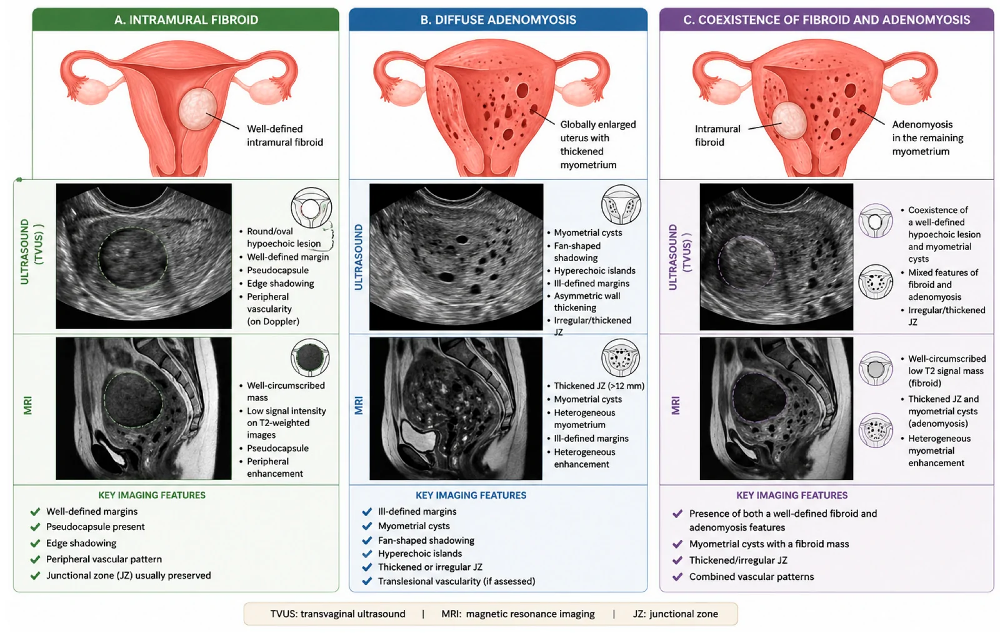
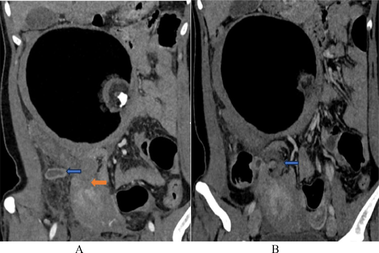
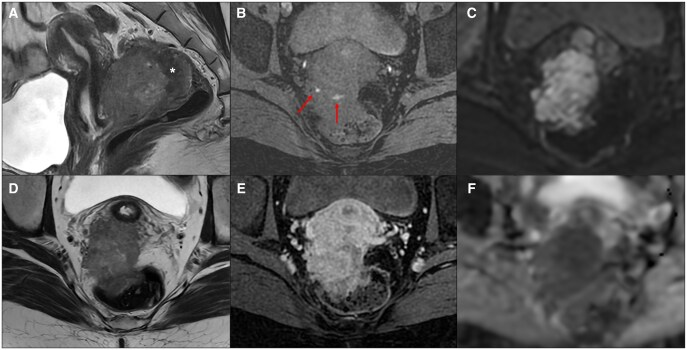
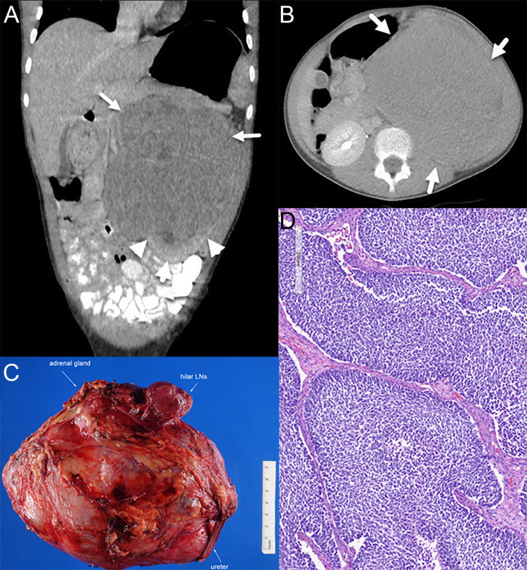

tong-quanTổng hợp y văn
📚 Bài tổng quan hệ: bảng DDx bắt buộc + bài liên quan chéo.
Bài học · Nguồn
pattern:binh-thuong vung:nguc anatomy:ngucTổng hợp y văn
Biến thể bình thường (normal variant) + cạm bẫy (pitfall).
Bài học · Nguồn
pattern:vi-cau-truc vung:phoi anatomy:phoiTổng hợp y văn
Trung tâm/vách/ngẫu nhiên.
Bài học · Nguồn
pattern:hach vung:trung-that score:IASLCTổng hợp y văn
Vùng N + ngưỡng 10mm.
Bài học · Nguồn
pattern:ong-day vung:nguc protocol:xq-ICUTổng hợp y văn
NKQ 3-5cm + CVC + NGT.
Bài học · Nguồn
pattern:not vung:phoi score:Lung-RADS protocol:Fleischner +1Tổng hợp y văn
Gamut nốt + Fleischner / Lung-RADS.
Bài học · Nguồn
pattern:not-da-o vung:phoiTổng hợp y văn
Trung tâm/bạch mạch/ngẫu nhiên.
Bài học · Nguồn
pattern:khoi vung:phoi score:TNMTổng hợp y văn
Trên 30mm + hạch 10mm.
Bài học · Nguồn
pattern:hang vung:phoiTổng hợp y văn
Thành ≤4mm/>15mm + liềm khí Monod.
Bài học · Nguồn
pattern:dong-dac vung:phoiTổng hợp y văn
Phân biệt đông đặc (consolidation) vs xẹp (atelectasis).
Bài học · Nguồn
pattern:dong-dac vung:phoiTổng hợp y văn
Thùy vs đa ổ vs hang lao.
Bài học · Nguồn
pattern:kinh-mo vung:phoi protocol:HRCTTổng hợp y văn
Dark bronchus + crazy-paving.
Bài học · Nguồn
pattern:mo-ke vung:phoiTổng hợp y văn
Kerley B + tim to vs ARDS.
Bài học · Nguồn
pattern:mo-ke pattern:kinh-mo vung:phoi protocol:HRCTTổng hợp y văn
Tổ ong đáy vs chừa màng phổi.
Bài học · Nguồn
pattern:tran-dich vung:mang-phoiTổng hợp y văn
Dịch tự do (free fluid) vs khu trú (loculated).
Bài học · Nguồn
pattern:tran-khi vung:mang-phoiTổng hợp y văn
Đường màng phổi + deep sulcus phim nằm.
Bài học · Nguồn
pattern:u-mang-phoi vung:mang-phoiTổng hợp y văn
Rind + co rút + amiăng.
Bài học · Nguồn
pattern:ngoai-mang-phoi vung:thanh-ngucTổng hợp y văn
Góc tù + Bochdalek.
Bài học · Nguồn
pattern:gian-phe-quan pattern:ken-khi vung:duong-thoTổng hợp y văn
Nhẫn ngọc >1,0 + kén ≤2mm.
Bài học · Nguồn
pattern:tieu-phe-quan vung:duong-tho protocol:HRCT-tho-raTổng hợp y văn
Bẫy khí thở ra.
Bài học · Nguồn
pattern:qua-sang vung:phoiTổng hợp y văn
Central dot vs thành.
Bài học · Nguồn
pattern:khoi vung:trung-that score:ITMIGTổng hợp y văn
3 khoang + chemical-shift SII.
Bài học · Nguồn
pattern:khi-trung-that vung:trung-thatTổng hợp y văn
Macklin + thủng thực quản.
Bài học · Nguồn
pattern:khuyet-thuoc vung:mach-nguc protocol:CTA-ngucTổng hợp y văn
Góc nhọn/tù + flap + IMH 50-70HU.
Bài học · Nguồn
pattern:tran-dich-mang-tim vung:mang-timTổng hợp y văn
Chai nước + RA collapse.
Bài học · Nguồn
pattern:chan-thuong vung:nguc protocol:CT-chan-thuongTổng hợp y văn
Đụng dập tan 3-7 ngày.
Bài học · Nguồntong-quanTổng hợp y văn
📚 Bài tổng quan hệ: bảng DDx bắt buộc + bài liên quan chéo.
Bài học · Nguồn
pattern:protocol-bung vung:bung protocol:CT-MRI-bungTổng hợp y văn
4 thì + Primovist 20p.
Bài học · Nguồn
pattern:binh-thuong vung:bung anatomy:bungTổng hợp y văn
Couinaud + crus/bare area.
Bài học · Nguồn
pattern:khi-tu-do vung:bungTổng hợp y văn
Rigler + Chilaiditi.
Bài học · Nguồnpattern:khoi-gan vung:ganTổng hợp y văn
Nền quyết định LR.
Bài học · Nguồn
pattern:khoi-gan vung:gan score:LI-RADS protocol:CT-MRI-ganTổng hợp y văn
APHE + washout + LR-5.
Bài học · Nguồn
pattern:u-lanh-gan vung:ganTổng hợp y văn
Klebsiella + ĐTĐ.
Bài học · Nguồnpattern:gan-lan-toa vung:ganTổng hợp y văn
10HU + tái thông rốn.
Bài học · Nguồn
pattern:viem-tui-mat vung:tui-matTổng hợp y văn
5 dấu CT + Murphy.
Bài học · Nguồnpattern:tac-mat vung:duong-matTổng hợp y văn
Bismuth + double-duct.
Bài học · Nguồn
pattern:viem-tuy vung:tuy score:AtlantaTổng hợp y văn
4 tuần + hoại tử.
Bài học · Nguồn
pattern:u-tuy vung:tuyTổng hợp y văn
Double-duct + IPMN.
Bài học · Nguồnpattern:chan-thuong-bung vung:lachTổng hợp y văn
AAST + thoát thuốc.
Bài học · Nguồnpattern:phuc-mac vung:phuc-macTổng hợp y văn
Omental cake + ADA.
Bài học · Nguồn
pattern:nang-than vung:than score:BosniakTổng hợp y văn
20HU + vách 4mm + nốt.
Bài học · Nguồn
pattern:soi-nieu vung:he-nieuTổng hợp y văn
Tắc câm + vỏ mỏng.
Bài học · Nguồn
pattern:khoi-thuong-than vung:thuong-than incidentaloma:thuong-than protocol:CT-washoutTổng hợp y văn
10HU + APW60/RPW40.
Bài học · Nguồnpattern:khoi-tien-liet-tuyen vung:tien-liet-tuyen score:PI-RADS protocol:mpMRI-tien-liet-tuyenTổng hợp y văn
PZ-DWI + 1,5cm + PSAD.
Bài học · Nguồn
pattern:day-thanh-ruot pattern:tac-ruot vung:ong-tieu-hoa protocol:CT-bung-capTổng hợp y văn
6mm + Hinchey + whirl.
Bài học · Nguồnpattern:tac-ruot vung:ruot protocol:CT-bung-capTổng hợp y văn
Whirl + mất ngấm.
Bài học · Nguồnpattern:day-thanh-ruot vung:ruotTổng hợp y văn
Đối xứng vs lệch tâm.
Bài học · Nguồn
pattern:phinh-DMC vung:DMC-bungTổng hợp y văn
Liềm + 3cm/5,5cm.
Bài học · Nguồnpattern:chen-ep-mach vung:mach-tangTổng hợp y văn
Góc 22 + beak.
Bài học · Nguồntong-quanTổng hợp y văn
📚 Bài tổng quan hệ: bảng DDx bắt buộc + bài liên quan chéo.
Bài học · Nguồn
pattern:protocol-so-nao vung:so-nao score:ASPECTS protocol:CT-MRI-so-naoTổng hợp y văn
W40/L40 + 4,5h/24h.
Bài học · Nguồn
pattern:giai-phau-nao vung:so-nao anatomy:naoTổng hợp y văn
Willis + vùng mạch.
Bài học · Nguồn
pattern:nhoi-mau vung:nao score:ASPECTS protocol:MRI-dot-quyTổng hợp y văn
DWI+/ADC− + 4,5h/24h.
Bài học · Nguồn
pattern:xuat-huyet-so vung:so-nao score:GCS-ICH protocol:CT-so-naoTổng hợp y văn
Liềm qua khớp vs thấu kính.
Bài học · Nguồn
pattern:u-nao vung:nao protocol:MRI-u-naoTổng hợp y văn
Bướm 65mm + rCBV.
Bài học · Nguồn
pattern:nhiem-trung-tktw vung:nao protocol:MRI-nhiem-trungTổng hợp y văn
Thái dương chừa hạch nền.
Bài học · Nguồn
pattern:mat-myelin vung:nao-tuy score:McDonaldTổng hợp y văn
Dawson + LETM 3 đốt.
Bài học · Nguồn
pattern:di-dang-mach vung:mach-nao protocol:CTA-MRATổng hợp y văn
Delta rỗng + popcorn.
Bài học · Nguồn
pattern:ngoai-truc-CPA vung:nen-soTổng hợp y văn
Đuôi màng vs ống tai.
Bài học · Nguồnpattern:thoat-vi-ung-thuy vung:nao-that score:EvansTổng hợp y văn
Evans 0,3 + DESH.
Bài học · Nguồnpattern:ong-song vung:cot-song score:MSU-PfirrmannTổng hợp y văn
Meniscus vs đẩy túi.
Bài học · Nguồnpattern:chan-thuong-cot-song vung:cot-song score:TLICSTổng hợp y văn
3 cột + mắt cú.
Bài học · Nguồn
pattern:viem-dot-song vung:cot-songTổng hợp y văn
Pott L2-L3 liệt.
Bài học · Nguồn
pattern:nhan-giap vung:tuyen-giap score:TI-RADS incidentaloma:nhan-giapTổng hợp y văn
TR5 9đ + Tg rửa + nuốt.
Bài học · Nguồnpattern:xuong-thai-duong-xoang vung:dau-mat-co protocol:MRI-non-EPITổng hợp y văn
DWI non-EPI + vôi.
Bài học · Nguồntong-quanTổng hợp y văn
📚 Bài tổng quan hệ: bảng DDx bắt buộc + bài liên quan chéo.
Bài học · Nguồn
pattern:protocol-msk vung:co-xuong-khop protocol:XR-CT-MRI-USTổng hợp y văn
T1W song con + SII.
Bài học · Nguồn
pattern:xuong-phu vung:co-xuong-khop anatomy:co-xuong-khopTổng hợp y văn
Vo kin vs donor site.
Bài học · Nguồn
pattern:gay-xuong vung:co-xuong-khop protocol:X-quang-chan-thuongTổng hợp y văn
Mo-mau 3 lop + Bohler.
Bài học · Nguồn
pattern:gay-tre-em vung:xuong-tre-em score:Salter-HarrisTổng hợp y văn
SH-IV vs cleft.
Bài học · Nguồn
pattern:gay-kin-moi vung:xuong protocol:MRI-stressTổng hợp y văn
Phu tuy + MTX.
Bài học · Nguồn
pattern:u-xuong vung:xuong score:LodwickTổng hợp y văn
Fluid-fluid + 885HU.
Bài học · Nguồn
pattern:u-ac-nguoi-lon vung:tuy-xuongTổng hợp y văn
Giot mua + CRAB.
Bài học · Nguồn
pattern:sarcoma-nguyen-phat vung:xuongTổng hợp y văn
Dam may + vo hanh.
Bài học · Nguồn
pattern:hep-khe-khop pattern:mon-xuong vung:khopTổng hợp y văn
Bo treo + tophi 160HU.
Bài học · Nguồn
pattern:viem-cot-song vung:cot-song score:ASASTổng hợp y văn
Phu cung chau STIR.
Bài học · Nguồn
pattern:rach-chop-xoay vung:khop-vai score:Goutallier protocol:MRI-khop-vaiTổng hợp y văn
AHI 7mm + mo 3-4.
Bài học · Nguồn
pattern:co-tay vung:chi-trenTổng hợp y văn
Eo thuyen + hom lao.
Bài học · Nguồn
pattern:rach-sun-chem pattern:dut-ACL vung:khop-goi protocol:MRI-khop-goiTổng hợp y văn
2 lat + 2 PCL + 5mm.
Bài học · Nguồn
pattern:khop-hang vung:khop-hang score:ARCOTổng hợp y văn
Duong doi + alpha.
Bài học · Nguồn
pattern:co-chan vung:co-chanTổng hợp y văn
Thompson + can 4mm.
Bài học · Nguồn
pattern:nhiem-trung-msk vung:xuong-mo-memTổng hợp y văn
Penumbra + khi can.
Bài học · Nguồnpattern:u-phan-mem vung:phan-memTổng hợp y văn
Vach 2mm + MDM2.
Bài học · Nguồntong-quanTổng hợp y văn
📚 Bài tổng quan hệ: bảng DDx bắt buộc + bài liên quan chéo.
Bài học · Nguồnpattern:protocol-mat vung:matTổng hợp y văn
CT 1mm + MRI fatsat.
Bài học · Nguồn
pattern:binh-thuong vung:hoc-mat anatomy:hoc-matTổng hợp y văn
4 cơ + sàn mỏng dễ vỡ.
Bài học · Nguồn
pattern:mang-dich-kinh vung:nhan-cau protocol:sieu-amTổng hợp y văn
V/Y dính đĩa vs aftermovement.
Bài học · Nguồn
pattern:voi-hoa vung:nhan-cauTổng hợp y văn
Vôi hóa + tuổi.
Bài học · Nguồn
pattern:vo-xuong vung:hoc-matTổng hợp y văn
Giọt lệ + OCS 2 giờ.
Bài học · Nguồn
pattern:loi-mat vung:hoc-matTổng hợp y văn
Chừa gân + T2 sáng.
Bài học · Nguồn
pattern:viem-hoc-mat vung:hoc-matTổng hợp y văn
Cả gân + steroid 48h.
Bài học · Nguồn
pattern:mach-xoang-hang vung:xoang-hangTổng hợp y văn
Tiếng thổi + SOV giãn.
Bài học · Nguồn
pattern:tuyen-le vung:hoc-matTổng hợp y văn
2 bên không đau + IgG4.
Bài học · Nguồn
pattern:viem-TK-thi vung:than-kinh-thiTổng hợp y văn
Đau + AQP4 + LETM.
Bài học · Nguồn
pattern:u-TK-thi vung:than-kinh-thiTổng hợp y văn
Tram-track vs fusiform.
Bài học · Nguồn
pattern:khoi-yen vung:giao-thoaTổng hợp y văn
Bán manh + mức dịch.
Bài học · Nguồnpattern:OCT vung:hoang-diemTổng hợp y văn
CST 300 + DRIL/EZ.
Bài học · Nguồnpattern:OCT vung:than-kinh-thiTổng hợp y văn
Asymmetry 9 + góc đóng.
Bài học · Nguồn
pattern:xuat-tiet-nhi vung:vong-macTổng hợp y văn
Vôi hóa + tuổi.
Bài học · Nguồnpattern:toan-than-mat vung:matTổng hợp y văn
ANCA/IgG4/ACE.
Bài học · Nguồnpattern:can-thiep-mat vung:matTổng hợp y văn
Coil + SRS 25Gy.
Bài học · Nguồntong-quanTổng hợp y văn
📚 Bài tổng quan hệ: bảng DDx bắt buộc + bài liên quan chéo.
Bài học · Nguồn
pattern:khoi-vu pattern:vi-voi-hoa vung:vu score:BI-RADS +1Tổng hợp y văn
Nodular 4 + beta-catenin.
Bài học · Nguồn
pattern:khoi-tu-cung vung:tu-cung score:FIGOTổng hợp y văn
Vo gia + JZ 12mm.
Bài học · Nguồn
pattern:khoi-buong-trung vung:buong-trung score:O-RADS protocol:MRI-chauTổng hợp y văn
Rokitansky + whirlpool.
Bài học · Nguồn
pattern:lac-noi-mac-sau vung:tieu-khung score:Enzian protocol:MRI-DIETổng hợp y văn
Mu nam + cham mau.
Bài học · Nguồn
pattern:thai-som vung:tu-cung-phan-phu score:SRU protocol:TVUS-thai-somTổng hợp y văn
CRL7/MSD25 + bagel.
Bài học · Nguồn
pattern:bat-thuong-nhau vung:tu-cung score:PAS protocol:MRI-nhauTổng hợp y văn
Lacunae + co 1mm.
Bài học · Nguồntong-quanTổng hợp y văn
📚 Bài tổng quan hệ: bảng DDx bắt buộc + bài liên quan chéo.
Bài học · Nguồn
pattern:suy-ho-hap-so-sinh vung:phoi-nhi protocol:X-quang-so-sinhTổng hợp y văn
The tich + cam mask.
Bài học · Nguồn
pattern:non-nhu-nhi pattern:tac-ruot-nhi vung:bung-nhi protocol:sieu-am-bung-nhiTổng hợp y văn
3-15 + whirlpool.
Bài học · Nguồn
pattern:vang-da-so-sinh vung:gan-mat-nhi protocol:sieu-am-gan-mat-nhiTổng hợp y văn
Thung 4mm + Kasai 60d.
Bài học · Nguồn
pattern:khoi-bung-nhi vung:sau-phuc-mac-nhiTổng hợp y văn
Claw vs om mach.
Bài học · Nguồn
pattern:khop-hang-nhi pattern:gay-xuong-nhi vung:co-xuong-khop-nhi score:Graf +1Tổng hợp y văn
Alpha 60 + Klein.
Bài học · Nguồn
pattern:xuat-huyet-mam pattern:u-ho-sau-nhi vung:nao-nhi score:PapileTổng hợp y văn
Papile + DWI ruc.
Bài học · Nguồntong-quanTổng hợp y văn
📚 Bài tổng quan hệ: bảng DDx bắt buộc + bài liên quan chéo.
Bài học · Nguồn
pattern:mui-xoang vung:dau-mat-co protocol:CT-mui-xoangTổng hợp y văn
Haller + Keros III.
Bài học · Nguồn
pattern:viem-nam-xoang vung:dau-mat-coTổng hợp y văn
Voi 70HU + black.
Bài học · Nguồn
pattern:cholesteatoma vung:xuong-da protocol:MRI-non-EPITổng hợp y văn
Scutum + DWI 2mm.
Bài học · Nguồn
pattern:nhiem-trung-co vung:co-sau protocol:CT-co-tiemTổng hợp y văn
Danger + mo khi.
Bài học · Nguồn
pattern:u-tuyen-bot vung:tuyen-botTổng hợp y văn
T2 sang + ADC.
Bài học · Nguồn
pattern:hach-co vung:co score:NI-RADSTổng hợp y văn
Gai mo + 270 do.
Bài học · Nguồntong-quanTổng hợp y văn
📚 Bài tổng quan hệ: bảng DDx bắt buộc + bài liên quan chéo.
Bài học · Nguồn
pattern:hep-vanh vung:vanh score:CAD-RADS protocol:CTA-vanhTổng hợp y văn
Agatston + HRP.
Bài học · Nguồn
pattern:LGE-cotim vung:cotim score:Lake-LouiseTổng hợp y văn
Noi mac vs giua.
Bài học · Nguồn
pattern:TAVI vung:van-tim protocol:CT-TAVITổng hợp y văn
Vong + vanh + dui.
Bài học · Nguồn
pattern:endoleak vung:DMC-bung protocol:CT-3-phaTổng hợp y văn
Nhanh + muon 120s.
Bài học · Nguồnpattern:an-toan-IR vung:can-thiep score:SIRTổng hợp y văn
INR + Fr + mach.
Bài học · Nguồntong-quanTổng hợp y văn
📚 Bài tổng quan hệ: bảng DDx bắt buộc + bài liên quan chéo.
Bài học · Nguồnpattern:dan-luu vung:bung-tiet-nieuTổng hợp y văn
Brodel + nhanh thap.
Bài học · Nguồn
pattern:nut-mach vung:mach-mau protocol:CTA-DSATổng hợp y văn
Doi hinh + lan.
Bài học · Nguồn
pattern:TACE-dot vung:gan score:LR-TRTổng hợp y văn
Vien deu + not.
Bài học · Nguồn